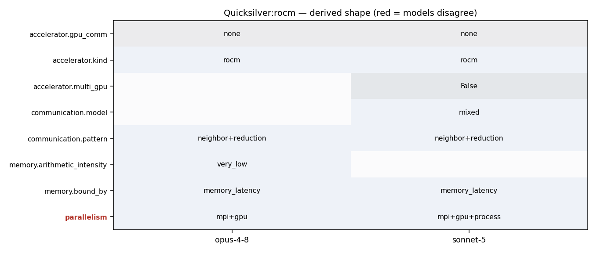

srun -n <ranks> qs -i input.inp ... (HAVE_HIP --offload-arch=gfx90a, one AMD GPU per rank, managed memory)
mpicxx(HIP)-built qs launched via srun -n<ranks> ./qs -i <input>.inp (cray-mpich + rocm 5.6, offload-arch gfx90a)
41 # 42 # -DHAVE_CUDA Define this to enable the Cuda build. 43 # 44 # -DHAVE_HIP Define this to enable the HIP build. Quicksilver assumes 45 # that HIP is targeting AMD GPUs. 46 # 47 # -DHAVE_OPENMP Use this define to generate a code which uses OpenMP 48 # threads. It will also be necessary to add the appropriate 49 # compiler flags to CXXFLAGS and LDFLAGS, which vary 50 # by compiler, such as '-qopenmp -pthread' for Intel, or 51 # '-fopenmp' for Gnu. Defining HAVE_OPENMP will use 52 # only features in OpenMP 3.x. 53 # 54 # -DHAVE_OPENMP_TARGET 55 # Use this define to generate OpenMP 4.5 code, 56 # targeting GPUs. When selecting this option you 57 # *MUST* specify either TARGET_NVIDIA or TARGET_AMD 58 # to determine which GPU architecture to use. 59 # 60 # -DTARGET_NVIDIA Use this define when building OpenMP target code for 61 # Nvidia GPUs 62 # 63 # -DTARGET_AMD Use this define when building OpenMP target code for 64 # AMD GPUs
107 #CPPFLAGS = -DHAVE_MPI -DHAVE_OPENMP -DHAVE_OPENMP_TARGET -DTARGET_AMD -I$(ROCM_ROOT)/include -Wno-unused-result 108 #LDFLAGS = -L$(ROCM_ROOT)/lib -lamdhip64 109 110 #AMD with HIP 111 ROCM_ROOT = /opt/rocm-5.6.0 112 CXX = /usr/tce/packages/cray-mpich/cray-mpich-8.1.26-rocmcc-5.6.0-cce-16.0.0a-magic/bin/mpicxx 113 CXXFLAGS = -g 114 CPPFLAGS = -DHAVE_MPI -DHAVE_HIP -x hip --offload-arch=gfx90a -fgpu-rdc -Wno-unused-result 115 LDFLAGS = -fgpu-rdc --hip-link --offload-arch=gfx90a 116 117 118
35 #define VAR_MEM MemoryControl::AllocationPolicy::HOST_MEM 36 #endif 37 38 #define CONCAT_(A, B) A ## B 39 #define CONCAT(A1, B1) CONCAT_(A1, B1) 40 41 #define gpuMallocManaged CONCAT(__PREFIX, MallocManaged) 42 #define gpuFree CONCAT(__PREFIX, Free) 43 #define gpuDeviceSynchronize CONCAT(__PREFIX, DeviceSynchronize) 44 #define gpuGetDeviceCount CONCAT(__PREFIX, GetDeviceCount) 45 #define gpuSetDevice CONCAT(__PREFIX, SetDevice) 46 #define gpuPeekAtLastError CONCAT(__PREFIX, PeekAtLastError) 47
109 110 #AMD with HIP 111 ROCM_ROOT = /opt/rocm-5.6.0 112 CXX = /usr/tce/packages/cray-mpich/cray-mpich-8.1.26-rocmcc-5.6.0-cce-16.0.0a-magic/bin/mpicxx 113 CXXFLAGS = -g 114 CPPFLAGS = -DHAVE_MPI -DHAVE_HIP -x hip --offload-arch=gfx90a -fgpu-rdc -Wno-unused-result 115 LDFLAGS = -fgpu-rdc --hip-link --offload-arch=gfx90a
54 // post recvs 55 { 56 CellInfo* recvPtr = recvBuf; 57 for (unsigned ii=0; ii<nbrDomain.size(); ++ii) 58 { 59 const int sourceRank = _ddc.getRank(nbrDomain[ii]); 60 const int nRecv = recvSet[ii].size(); 61 mpiIrecv(recvPtr, nRecv, datatype, sourceRank, xTag, _comm, request+2*ii); 62 recvPtr += nRecv; 63 } 64 } 65 66 // assemble buffers and send 67 { 68 int count = 0; 69 CellInfo* sendPtr = sendBuf; 70 for (unsigned ii=0; ii<nbrDomain.size(); ++ii) 71 { 72 for (auto iter=sendSet[ii].begin(); iter!=sendSet[ii].end(); ++iter) 73 sendBuf[count++] = cellInfoMap[*iter]; 74 const int targetRank = _ddc.getRank(nbrDomain[ii]); 75 const int nSend = sendSet[ii].size(); 76 mpiIsend(sendPtr, nSend, datatype, targetRank, xTag, _comm, request+(2*ii)+1); 77 sendPtr += nSend;
77 { qs_assert(MPI_Waitall(count, array_of_requests, array_of_statuses) == MPI_SUCCESS); } 78 void mpiAllreduce ( void *sendbuf, void *recvbuf, int count, MPI_Datatype datatype, MPI_Op operation, MPI_Comm comm ) 79 { qs_assert(MPI_Allreduce(sendbuf, recvbuf, count, datatype, operation, comm) == MPI_SUCCESS); } 80 void mpiIAllreduce( void *sendbuf, void *recvbuf, int count, MPI_Datatype datatype, MPI_Op operation, MPI_Comm comm, MPI_Request *request) 81 #ifdef HAVE_ASYNC_MPI 82 { qs_assert(MPI_Iallreduce(sendbuf, recvbuf, count, datatype, operation, comm, request) == MPI_SUCCESS); } 83 #else 84 { qs_assert(MPI_Allreduce(sendbuf, recvbuf, count, datatype, operation, comm ) == MPI_SUCCESS); } 85 #endif 86 void mpiReduce( void *sendbuf, void *recvbuf, int count, MPI_Datatype datatype, MPI_Op op, int root, MPI_Comm comm ) 87 { qs_assert(MPI_Reduce(sendbuf, recvbuf, count, datatype, op, root, comm) == MPI_SUCCESS); }
55 { 56 CellInfo* recvPtr = recvBuf; 57 for (unsigned ii=0; ii<nbrDomain.size(); ++ii) 58 { 59 const int sourceRank = _ddc.getRank(nbrDomain[ii]); 60 const int nRecv = recvSet[ii].size(); 61 mpiIrecv(recvPtr, nRecv, datatype, sourceRank, xTag, _comm, request+2*ii); 62 recvPtr += nRecv; 63 } 64 } 65 66 // assemble buffers and send 67 { 68 int count = 0; 69 CellInfo* sendPtr = sendBuf; 70 for (unsigned ii=0; ii<nbrDomain.size(); ++ii) 71 { 72 for (auto iter=sendSet[ii].begin(); iter!=sendSet[ii].end(); ++iter) 73 sendBuf[count++] = cellInfoMap[*iter]; 74 const int targetRank = _ddc.getRank(nbrDomain[ii]); 75 const int nSend = sendSet[ii].size(); 76 mpiIsend(sendPtr, nSend, datatype, targetRank, xTag, _comm, request+(2*ii)+1); 77 sendPtr += nSend; 78 }
43 tal.push_back(_balanceTask[0]._numSegments); 44 vector<uint64_t> sum(tal.size()); 45 46 mpiAllreduce(&tal[0], &sum[0], tal.size(), MPI_UINT64_T, MPI_SUM, monteCarlo->processor_info->comm_mc_world); 47 48 int index = 0; 49 _balanceTask[0]._absorb = sum[index++];
12 OpenMP and MPI are used for parallelization. A GPU version is 13 available. Unified memory is assumed. 14 15 Performance of Quicksilver is likely to be dominated by latency bound 16 table look-ups, a highly branchy/divergent code path, and poor 17 vectorization potential. 18 19 For more information, visit the 20 [LLNL co-design pages.](https://codesign.llnl.gov/quicksilver.php)
10 memory access patterns, communication patterns, and the branching or 11 divergence of Mercury for problems using multigroup cross sections. 12 OpenMP and MPI are used for parallelization. A GPU version is 13 available. Unified memory is assumed. 14 15 Performance of Quicksilver is likely to be dominated by latency bound 16 table look-ups, a highly branchy/divergent code path, and poor
25 _nuclearData = 0; 26 _materialDatabase = 0; 27 28 #if defined (HAVE_UVM) 29 void *ptr1, *ptr2, *ptr3, *ptr4; 30 31 gpuMallocManaged( &ptr1, sizeof(Tallies) ); 32 gpuMallocManaged( &ptr2, sizeof(MC_Processor_Info) ); 33 gpuMallocManaged( &ptr3, sizeof(MC_Time_Info) ); 34 gpuMallocManaged( &ptr4, sizeof(MC_Fast_Timer_Container) ); 35 36 _tallies = new(ptr1) Tallies( params.simulationParams.balanceTallyReplications, 37 params.simulationParams.fluxTallyReplications,
53 MonteCarlo* initMC(const Parameters& params) 54 { 55 MonteCarlo* monteCarlo; 56 #ifdef HAVE_UVM 57 void* ptr; 58 gpuMallocManaged( &ptr, sizeof(MonteCarlo) ); 59 monteCarlo = new(ptr) MonteCarlo(params); 60 #else 61 monteCarlo = new MonteCarlo(params); 62 #endif 63 initGPUInfo(monteCarlo); 64 initTimeInfo(monteCarlo, params);
9 particle transport problem. Quicksilver attempts to replicate the 10 memory access patterns, communication patterns, and the branching or 11 divergence of Mercury for problems using multigroup cross sections. 12 OpenMP and MPI are used for parallelization. A GPU version is 13 available. Unified memory is assumed. 14 15 Performance of Quicksilver is likely to be dominated by latency bound 16 table look-ups, a highly branchy/divergent code path, and poor
123 124 #if defined GPU_NATIVE 125 126 GLOBAL void CycleTrackingKernel( MonteCarlo* monteCarlo, int num_particles, ParticleVault* processingVault, ParticleVault* processedVault ) 127 { 128 int global_index = getGlobalThreadID(); 129 130 if( global_index < num_particles ) 131 { 132 CycleTrackingGuts( monteCarlo, global_index, processingVault, processedVault ); 133 } 134 } 135 136 #endif 137 138 void cycleTracking(MonteCarlo *monteCarlo) 139 { 140 MC_FASTTIMER_START(MC_Fast_Timer::cycleTracking); 141 142 bool done = false; 143 144 //Determine whether or not to use GPUs if they are available (set for each MPI rank) 145 ExecutionPolicy execPolicy = getExecutionPolicy( monteCarlo->processor_info->use_gpu ); 146
1 #ifndef DECLAREMACRO_HH 2 #define DECLAREMACRO_HH 3 4 #if defined HAVE_CUDA || defined HAVE_HIP 5 #define HOST_DEVICE __host__ __device__ 6 #define HOST_DEVICE_CUDA __host__ __device__ 7 #define HOST_DEVICE_CLASS 8 #define HOST_DEVICE_END 9 #define DEVICE __device__ 10 #define DEVICE_END 11 //#define HOST __host__ 12 #define HOST_END 13 #define GLOBAL __global__ 14 #elif HAVE_OPENMP_TARGET 15 #define HOST_DEVICE _Pragma( "omp declare target" ) 16 #define HOST_DEVICE_CUDA
41 # 42 # -DHAVE_CUDA Define this to enable the Cuda build. 43 # 44 # -DHAVE_HIP Define this to enable the HIP build. Quicksilver assumes 45 # that HIP is targeting AMD GPUs. 46 # 47 # -DHAVE_OPENMP Use this define to generate a code which uses OpenMP 48 # threads. It will also be necessary to add the appropriate
107 #CPPFLAGS = -DHAVE_MPI -DHAVE_OPENMP -DHAVE_OPENMP_TARGET -DTARGET_AMD -I$(ROCM_ROOT)/include -Wno-unused-result 108 #LDFLAGS = -L$(ROCM_ROOT)/lib -lamdhip64 109 110 #AMD with HIP 111 ROCM_ROOT = /opt/rocm-5.6.0 112 CXX = /usr/tce/packages/cray-mpich/cray-mpich-8.1.26-rocmcc-5.6.0-cce-16.0.0a-magic/bin/mpicxx 113 CXXFLAGS = -g 114 CPPFLAGS = -DHAVE_MPI -DHAVE_HIP -x hip --offload-arch=gfx90a -fgpu-rdc -Wno-unused-result 115 LDFLAGS = -fgpu-rdc --hip-link --offload-arch=gfx90a 116 117 118